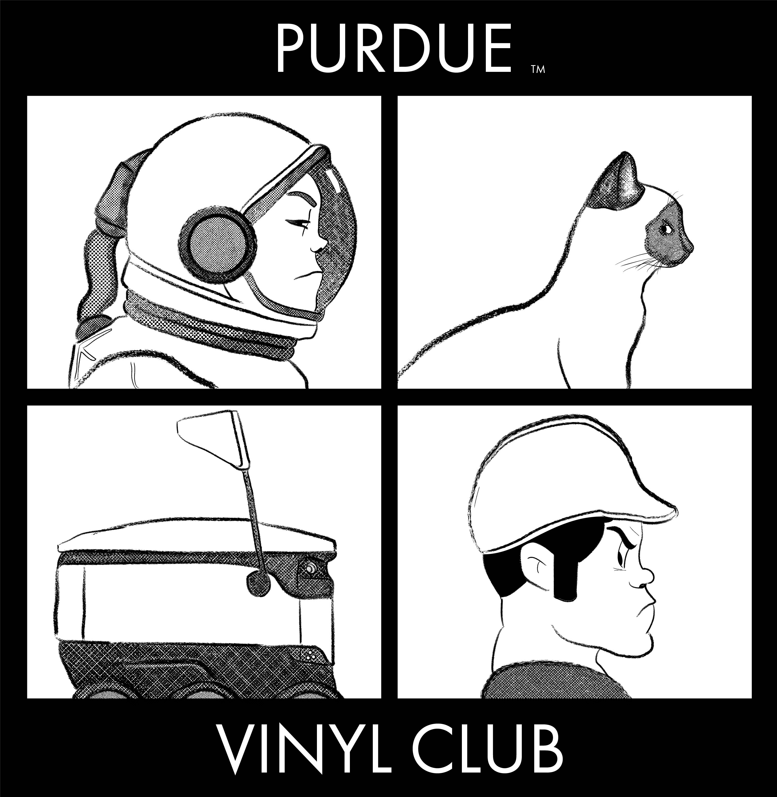
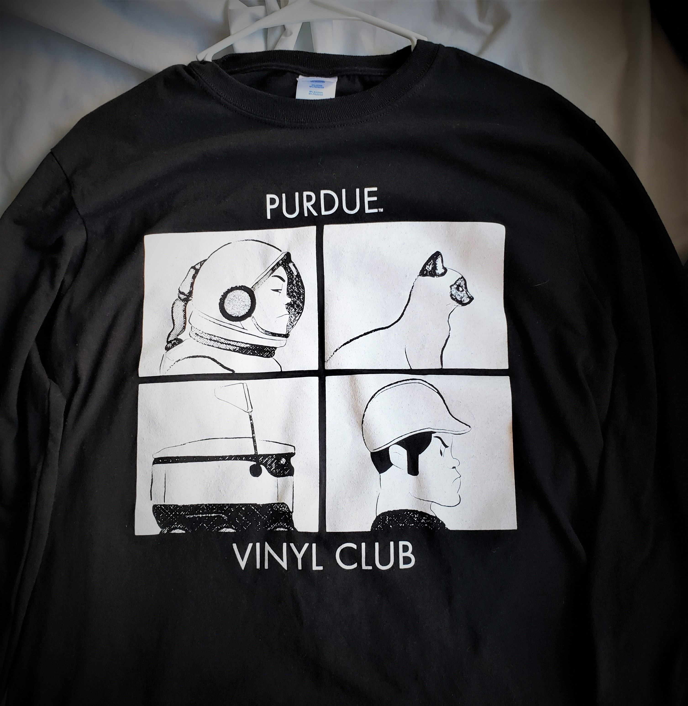
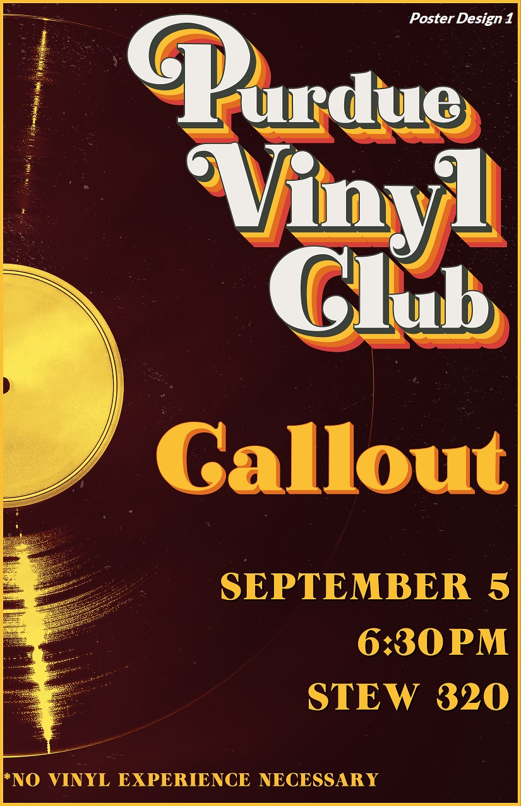
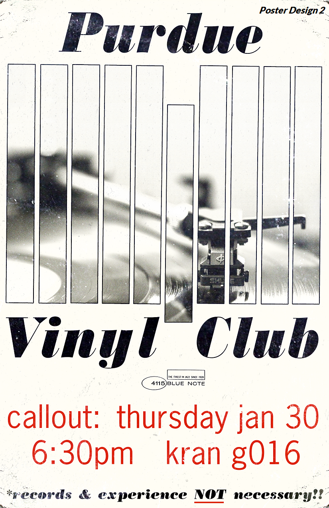
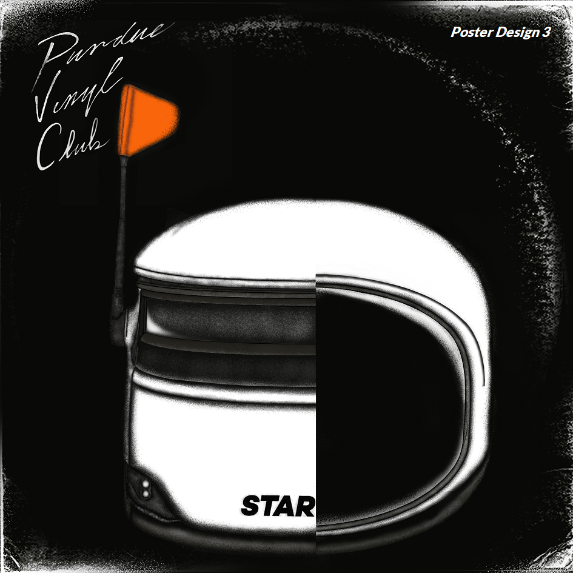
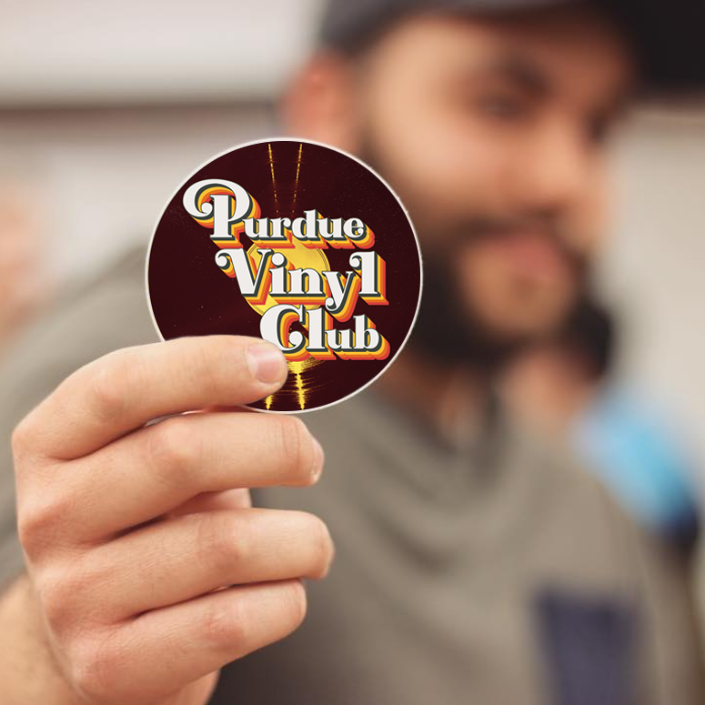
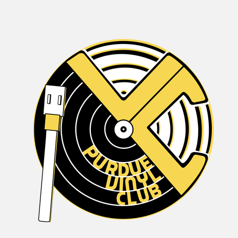
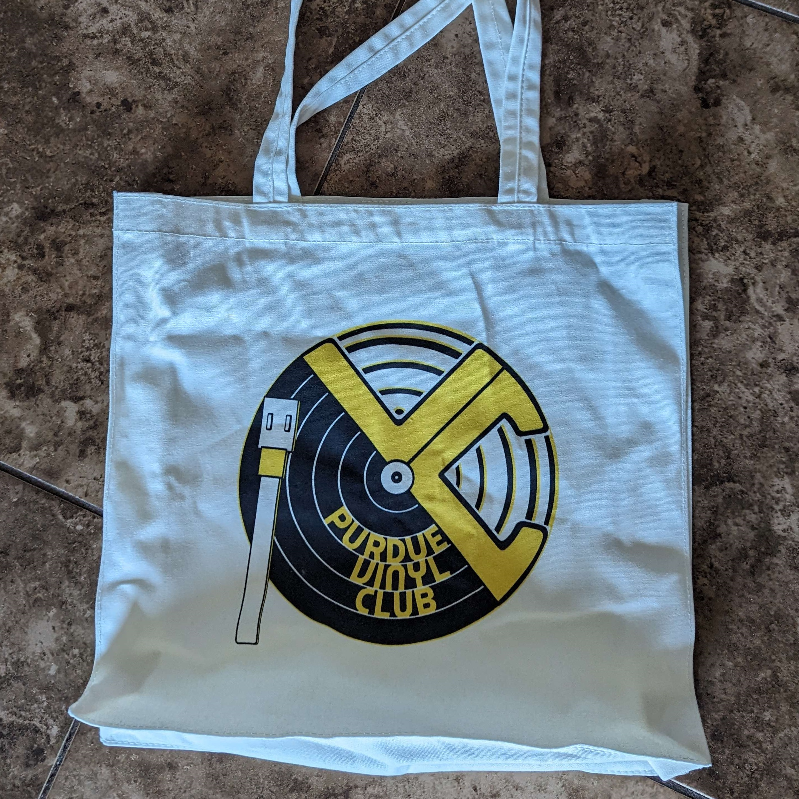
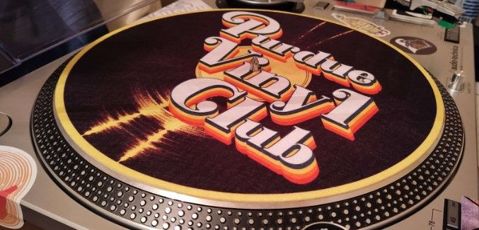

Purdue Vinyl Club
I worked with Purdue Vinyl Club, a student organization I was involved in during my student years, to overhaul their visual identity and design club merchandise, including t-shirts, tote bags, and stickers. This design overhaul also included creating a logo and flyers to effectively promote the organization and represent the club to the rest of campus.
Illustration / Branding / Print / Typography
Problem/Design Intent
The primary challenge was a lack of visual cohesion. While the club had a following, it lacked a consistent "face," making it difficult to establish a recognizable presence on campus. I needed to solve the problem of how to build a brand from the ground up that felt authentic to the group's diverse tastes and culture, as well as reflective of the university's culture. In addition, I wanted to bridge generational gaps: it had to feel "classic" enough to reflect the history of vinyl, yet modern and energetic enough to appeal to a campus audience used to more accessible listening options. I needed to solve the problem of how to make something vintage feel contemporary.
My intent was to build a modular visual language that bridged the gap between vinyl culture and the unique Purdue student experience. I utilized geometric motifs inspired by record grooves and spindle holes, but grounded them in an aesthetic that reflected the pride and grit of what it means to be part of the university. I focused on creating a graphic system that felt curated and personal. Every asset was designed with sustainability in mind, ensuring that the identity could be used and evolve long after my time in the club had passed.

Insight
My approach to developing a brand identity was simple: eye-grabbing, but familiar and a purpose that is easily understood. Thinking about eras in design that seemed to best strike this balance, I arrived at Reid Miles' sleek but minimalist work for Blue Note Records, and Colin Brignall's use of bold colors and display fonts during the late '60s and early'70s. Additionally, integrating elements recognizable to Purdue (while abiding by copyright restrictions) was essential.
Outcomes
The result was a foundational visual identity that gave the Purdue Vinyl Club a cohesive voice for the first time. For me, this project was a deeply meaningful experience in building a brand from the ground up—moving beyond a simple logo to create a suite of visuals that truly resonated with a diverse community of music lovers. By aligning the visual direction with the collective identity of the club members, I was able to deliver a brand that felt both personal and sustainable, marking a significant milestone in my development as a designer. Years after my graduation, the logos, flyers, and merchandise designs I created are still featured prominently as the primary visual face of the Purdue Vinyl Club.








